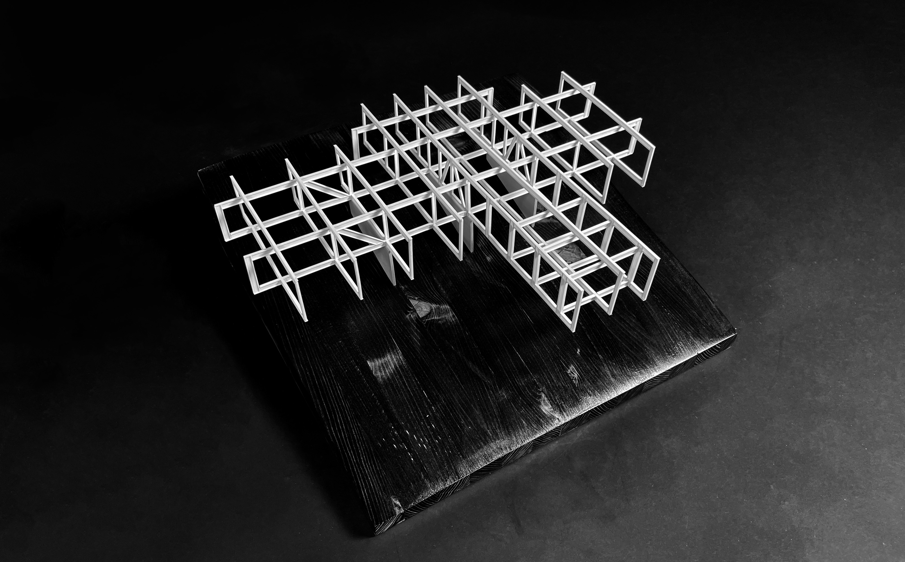
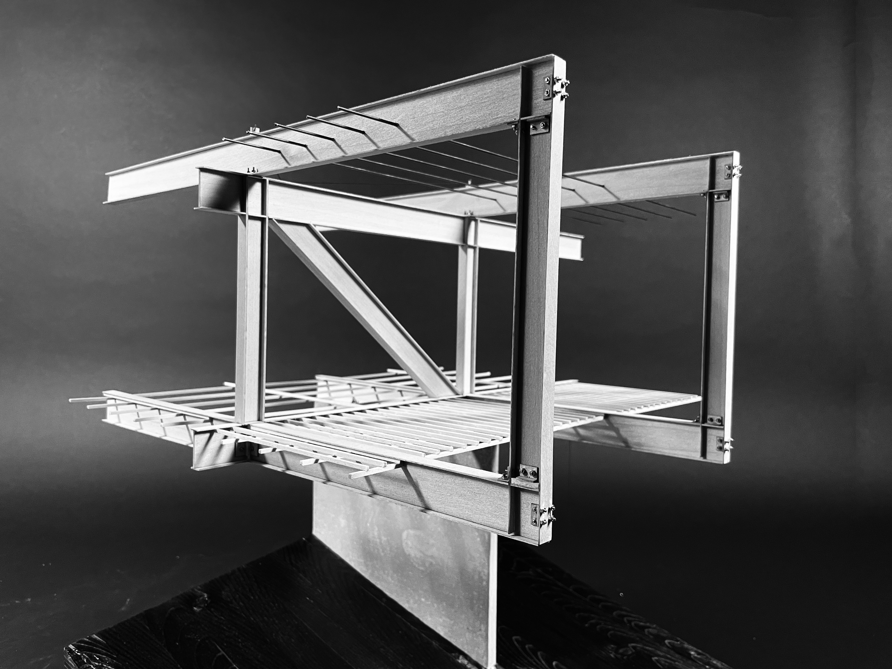
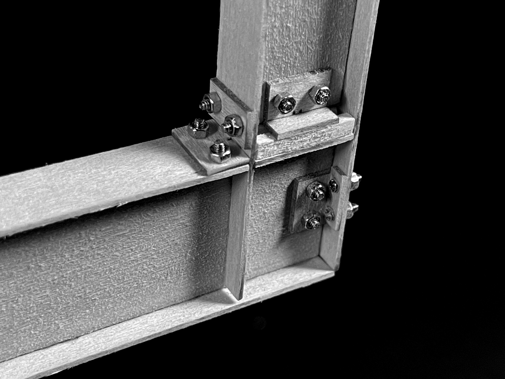
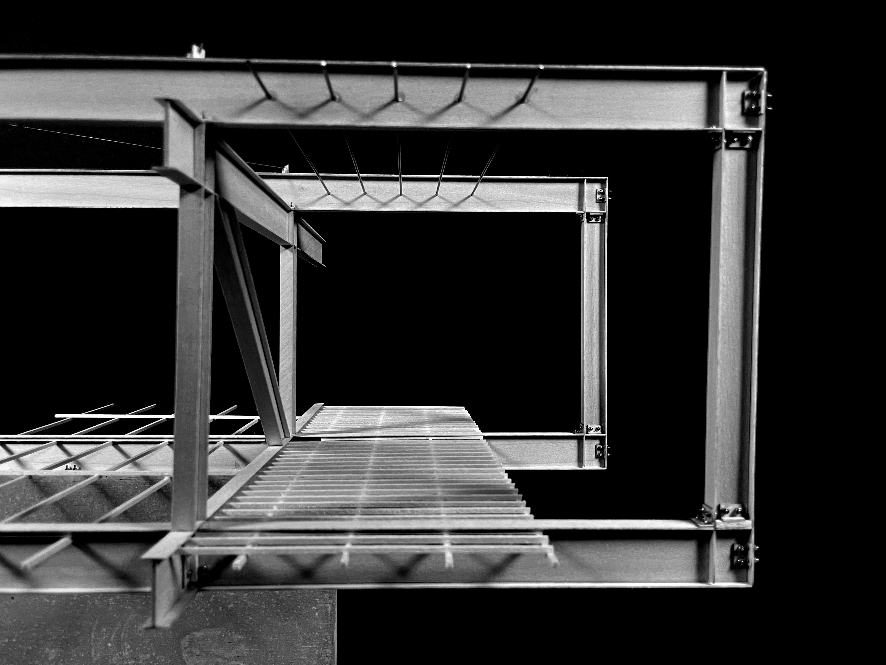
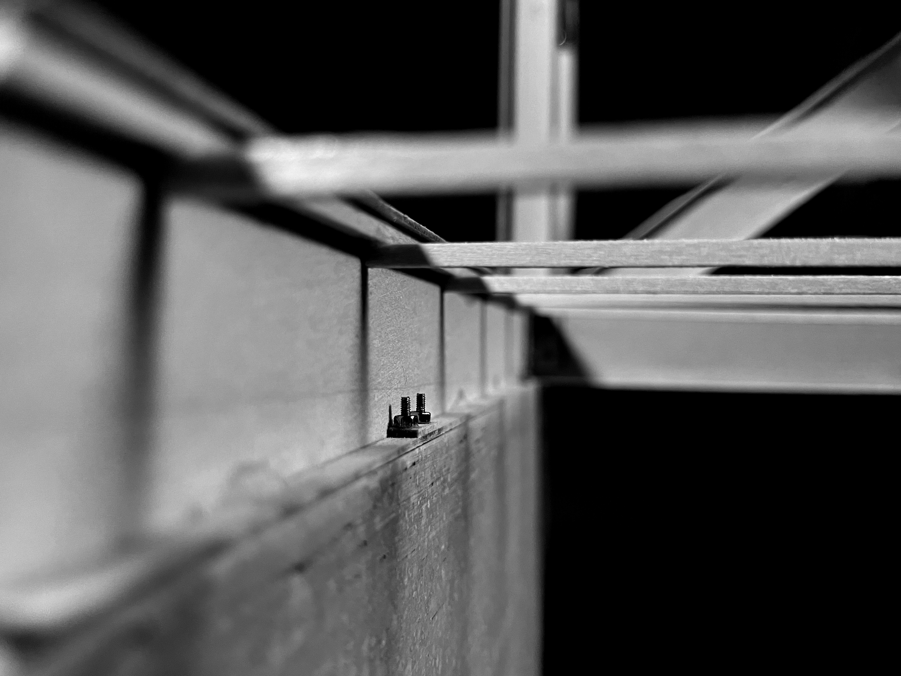
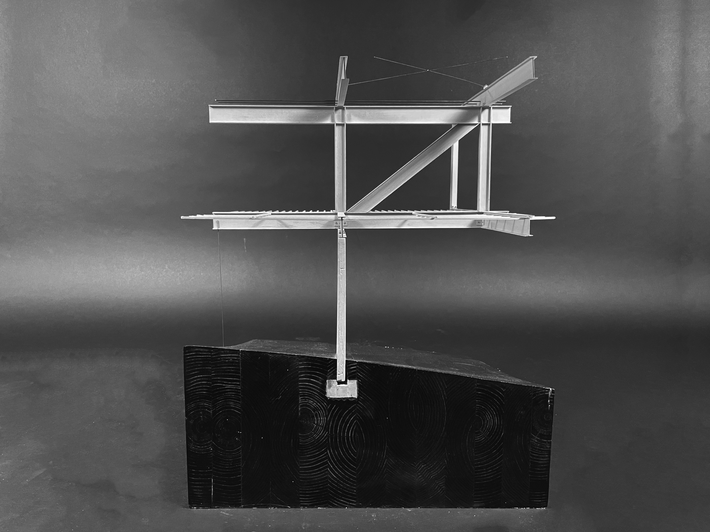
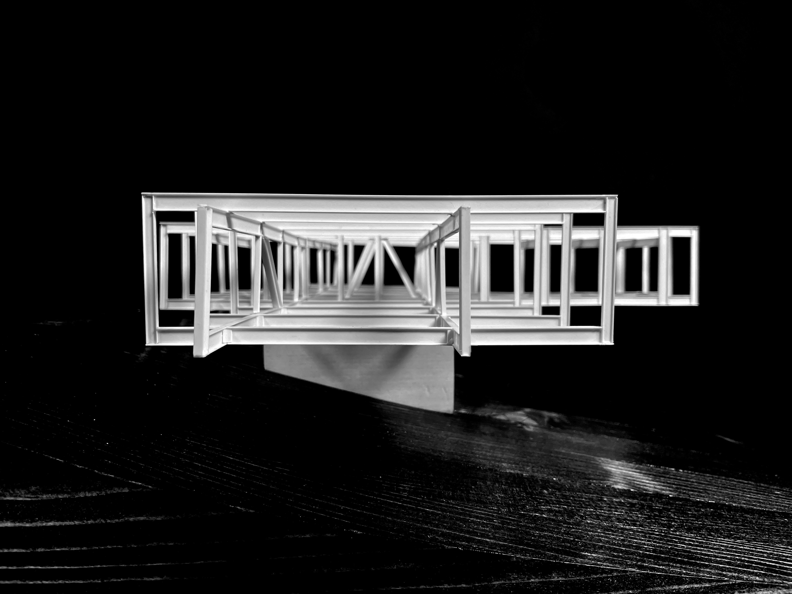
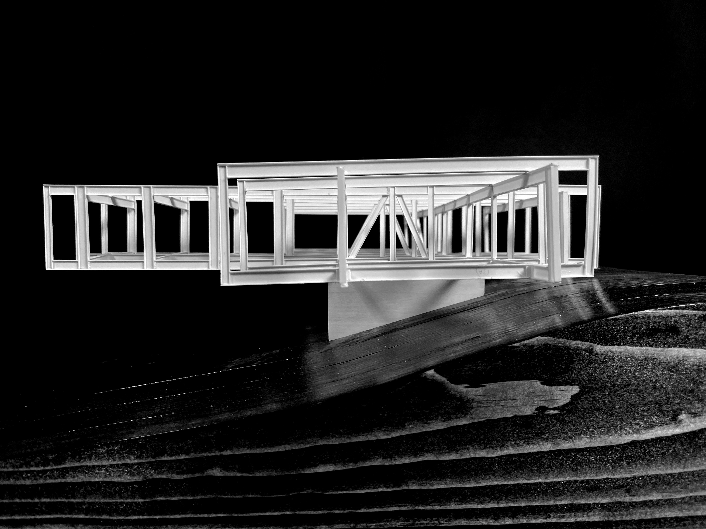
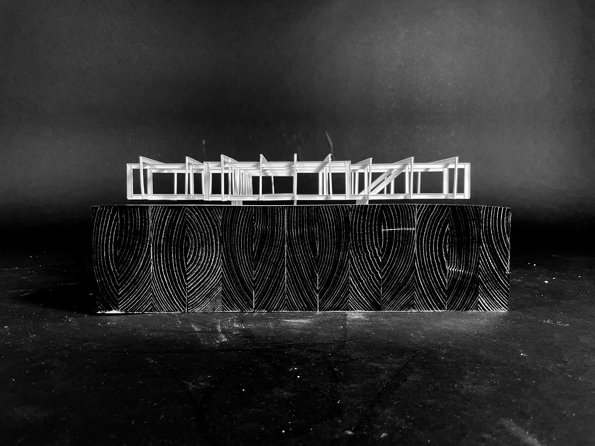
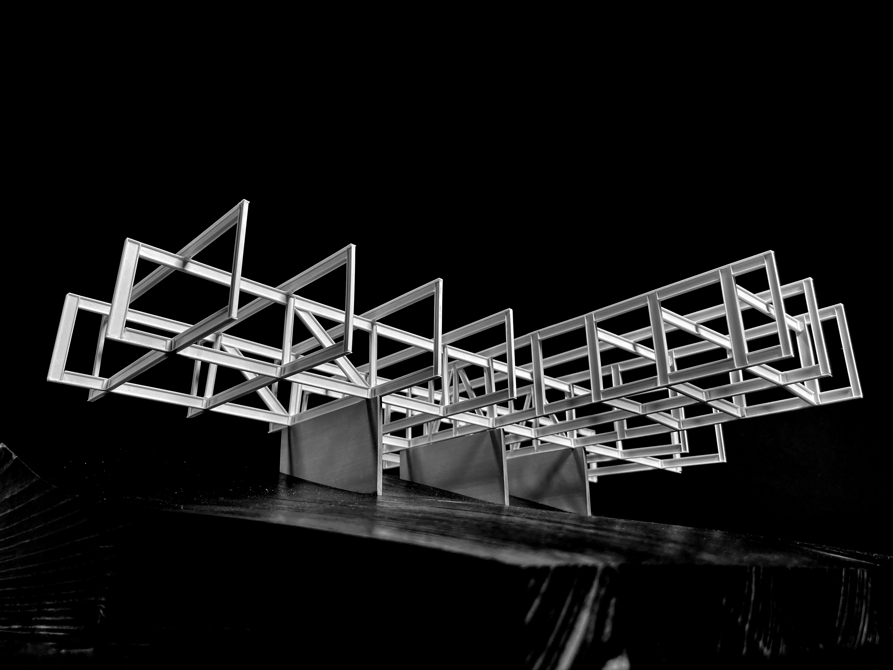

Architecture - Structural Systems Fall 2021
For our Structural Systems class, we were asked to work in groups of three in order to create a structural model of an approved precedent. Together with B. Arch 2025s Shu Chen Xu and Zekai Lin, we settled on the Himmel Trial House by Baun Architects. What follows are several photos of a full structural model and a specific detail model. I take care to document the various connections between the heroic steel beams, and the thin walls supporting them.









